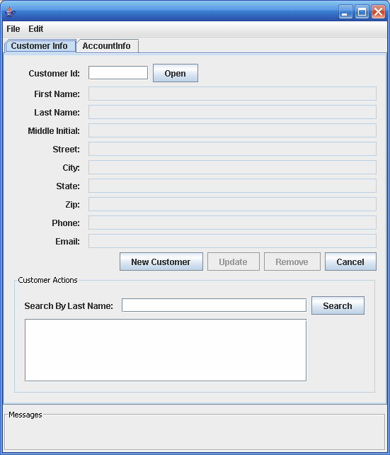

Building, Packaging, Deploying, and Running the Duke's Bank Application
To build the Duke’s Bank application, you must have installed the tutorial bundle as described in . When you install the bundle, the Duke’s Bank application files are located in the tut-install/javaeetutorial5/examples/dukesbank/ directory. This directory contains the configuration files for creating the EAR, dukesbank.ear. The EAR consists of the following three modules:
dukesbank-appclient: The application client
dukesbank-ejb: The enterprise beans and persistence entities
dukesbank-war: The web client
After you build the source code, all the sub-modules will be built into their respective module packages, and the resulting EAR file will reside in the tut-install/javaeetutorial5/examples/dukesbank/dist/ directory.
Setting Up the Servers
Before you can package, deploy, and run the example, you must first set up the Java DB database server with customer and account data, and you must add some resources to the Application Server.
Starting the Application Server
Before you can start this tutorial, the Application Server must be running. For information on starting the Application Server, see Starting and Stopping the Application Server.
Creating the Bank Database in NetBeans IDE
To create the database tables used in Duke’s Bank, follow the instructions in Creating the Database Tables in NetBeans IDE.
Creating the Bank Database Using Ant
In Duke’s Bank, the database tables will be created and populated before deploying the application. This happens automatically when you run the deploy task. You can manually reset the database to its original state by following these steps:
In a terminal window or command prompt, go to the tut-install/javaeetutorial5/examples/dukesbank/ directory.
Execute the following command:
ant create-tables
This task executes the SQL commands contained in tut-install/javaeetutorial5/examples/common/sql/javadb/tutorial.sql. The SQL commands delete any existing tables, create new tables, and insert the initial data in the tables.
Adding Users and Groups to the File Realm
To enable the Application Server to determine which users can access enterprise bean methods and resources in the web client, add users and groups to the server’s file security realm using the Admin Console following the procedures described in Managing Users and Groups on the Application Server. Add the users and groups listed in Table 37-3.
Table 37-3 Duke’s Bank Users and Groups
User |
Password |
Group |
|---|---|---|
200 |
javaee |
bankCustomer |
bankadmin |
javaee |
bankAdmin |
Building, Packaging, and Deploying Duke’s Bank Using NetBeans IDE
Follow these instructions to build, package, deploy, and run the Duke’s Bank example application to your Application Server instance using NetBeans IDE.
In NetBeans IDE, select File→Open Project.
In the Open Project dialog, navigate to tut-install/javaeetutorial5/examples/.
Select the dukesbank folder.
Select the Open as Main Project and Open Required Projects check boxes.
Click Open Project.
In the Projects tab, right-click the dukesbank project and select Undeploy and Deploy.
You will see the output in the Output tab.
Building, Packaging, and Deploying Duke’s Bank Using Ant
To compile and package the enterprise beans, application client, and web client into dukesbank.ear, go to the tut-install/javaeetutorial5/examples/dukesbank/ directory of the tutorial distribution and execute the command:
ant
Run the following command to deploy dukesbank.ear:
ant deploy
This task calls the create-tables task to initialize the database tables.
Running the Duke's Bank Application Client Using NetBeans IDE
To run the application client in NetBeans IDE, follow these steps:
In NetBeans IDE, select the dukesbank project in the Projects pane.
Right-click dukesbank and select Run.
At the login prompts, type bankadmin for the user name and javaee for the password. You should see the application client, as shown in Figure 37-5.
You can now create customers and accounts using the application client.
Running the Duke's Bank Application Client Using Ant
To run the application client, follow these steps:
In a terminal window, go to tut-install/javaeetutorial5/examples/dukesbank/.
Enter the following command:
ant run
At the login prompts, type bankadmin for the user name and javaee for the password. You should see the application client, as shown in Figure 37-5.
You can now create customers and accounts using the application client.
Figure 37-5 BankAdmin Application Client
Running the Duke's Bank Web Client
To run the web client, follow these steps:
Open the bank URL, http://localhost:8080/bank/main.faces, in a web browser.
The application displays the login page. Enter 200 for the customer ID and javaee for the password. Click Submit.
Select an application function: Account List, Transfer Funds, ATM, or Logoff. When you have a list of accounts, you can get an account history by selecting an account link.
Note - The first time you select a new page, particularly a complicated page such as an account history, it takes some time to display because the Application Server must translate the page into a servlet class and compile and load the class.
If you select Account List, you will see the screen shown in Figure 37-6.